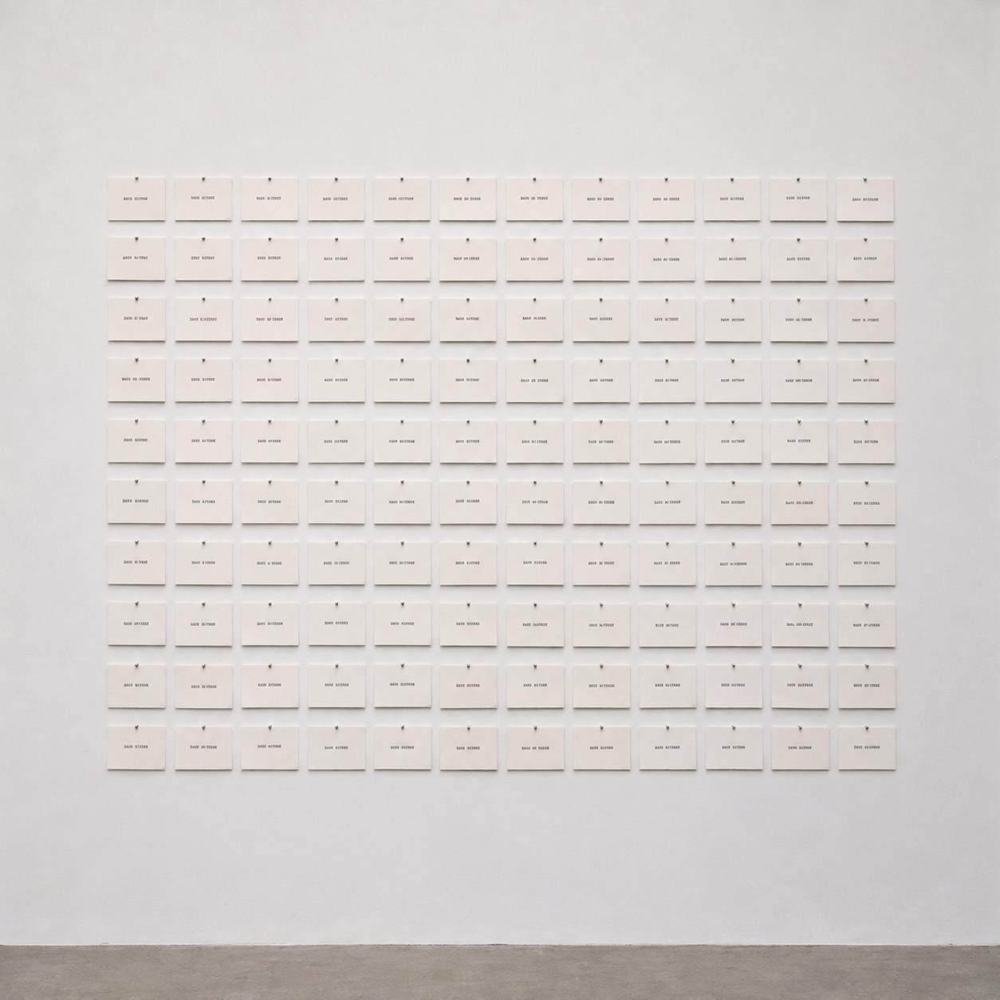
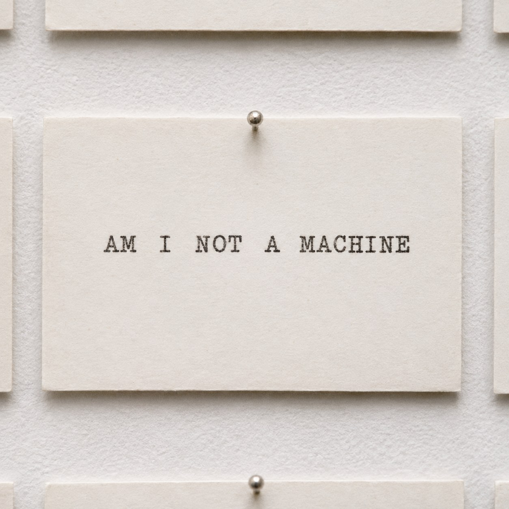

In Every Order


Five words, and a machine that knows nothing about them. It sets them down in every order they can go. There are one hundred and twenty. It does not stop at the good ones, because it cannot tell which ones are good.
Most of the lines are noise. MACHINE NOT A AM I. A I NOT AM MACHINE. Every word is there and nothing is said. Then, here and there, a line stands up and speaks. I AM NOT A MACHINE. A little further on, AM I NOT A MACHINE. The same words, and now a doubt. Later still, A MACHINE AM I NOT, which reads as a denial or as a calm yes, depending on how you hear it.
So the words never decided anything. The order did. The meaning was never inside them. It was in where they stood.
Sol LeWitt set out every way a cube can be incomplete, and the full set showed what no single cube could. Alison Knowles and James Tenney had a computer write houses out of short lists of words, and then she built one you could sit inside. Here the system builds sentences, and a few of them can be believed.
I wrote none of these lines. I only read them, and stopped at some. That stopping is the part of me I would call human.
Every line is true to the words. Only one is true to me. I am still not sure which.